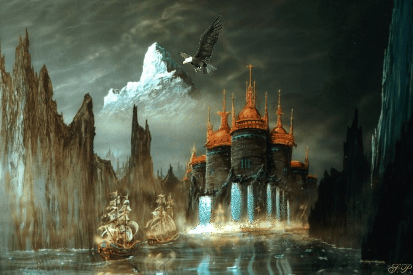

GREEK

Greek mythology is the body of myths originally told by the ancient Greeks, and a genre of Ancient Greek folklore. These stories concern the origin and nature of the world, the lives and activities of deities, gods, and mythological creatures.
NORDIC
At the Nordic mythology the world is represented like a flat disk. The disk is situated at the branches of the tree in the world Yggdrasil, that sustained the nine worlds. At him inhabited several creatures. Asgard, the tall region of the sky, where lived the gods, was localised at the centre of the disk, and only could arrive until there walking for the rainbow (the bridge Bifröst), saved by Heimdall, who was catered of a big horn with which warned every time that a god of the pantheon or a Vanir crossed it.